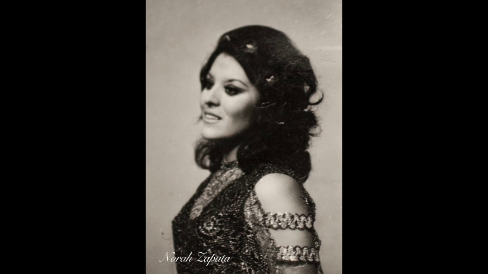
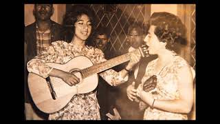
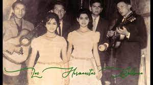
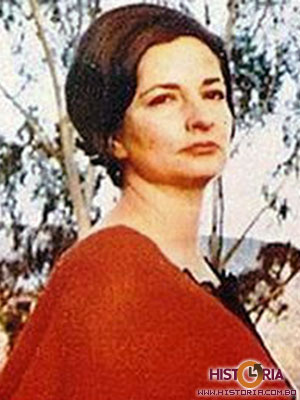
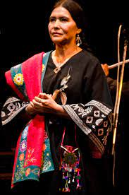

BIOGRAFIA
Asuntita Limpias (Trinidad, 1915-Cochabamba, 1995)
Asunta Limpias de Parada, (Trinidad 11 de enero de 1915 – Cochabamba 27 de octubre de 1995) fue una compositora, escritora y cantante boliviana autora de una amplia y diversa producción musical folklórica.
Norah Zapata
Norah Zapata Prill, escritora y poetisa, nació en Cochabamba, en 1946 Es miembro correspondiente de la Academia Boliviana de la Lengua desde 1984. Profesora de Literatura y Castellano, egresada de la Normal Superior Católica de Cochabamba.

Alcira Arteaga
Los Genios nació originalmente como un trío de voces masculinas, sin embargo, fue la voz de Arteaga la que finalmente los distinguió y condujo a la grabación de una gran cantidad de discos, con los que pudieron ganar el reconocimiento de todo el país.

Hermanitas Saldaña
El Duó profesional más joven de Bolivia inicia su trayectoria artística el año 1957, en el año 1960 graban su primer disco en Brasil. En 1968 las Hermanitas Saldaña grabaron con gran éxito el tema “Jumechi”, del Mtro. Godofredo Nuñez, en los Estudios Lyra - Discolandia.

Gladys Moreno (Santa Cruz de la Sierra, 1933-2005)
Gladys Moreno nació en la ciudad de Santa Cruz de la Sierra, el 28 de Noviembre de 1933. Hija de Rómulo Moreno y de Hortensia Cuellar, se inclinó por la música desde muy pequeña interpretando chovenas y taquiraris. En la escuela rápidamente fue era la voz preferida de maestros y estudiantes en horas cívicas.

Luzmila Carpio (Potosí, 1954)
Luzmila Carpio (Qala Qala, 1949) es una cantante boliviana de música andina reconocida por su característico canto de tonos muy altos que imitan al canto de los pájaros. Nació en la comunidad de Qala Qala, Ayllu Panacachi, situada en el Departamento de Potosí.
